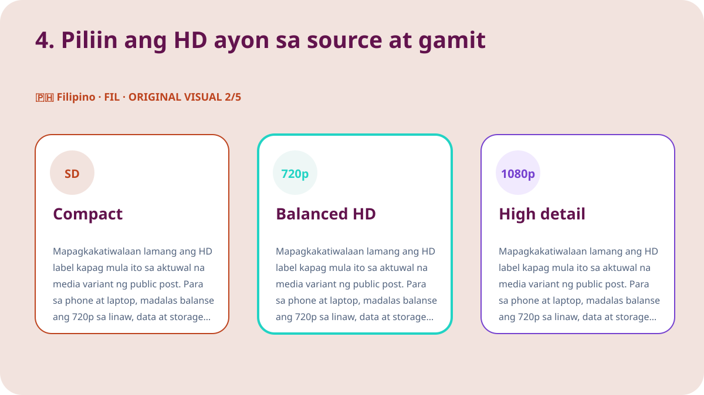
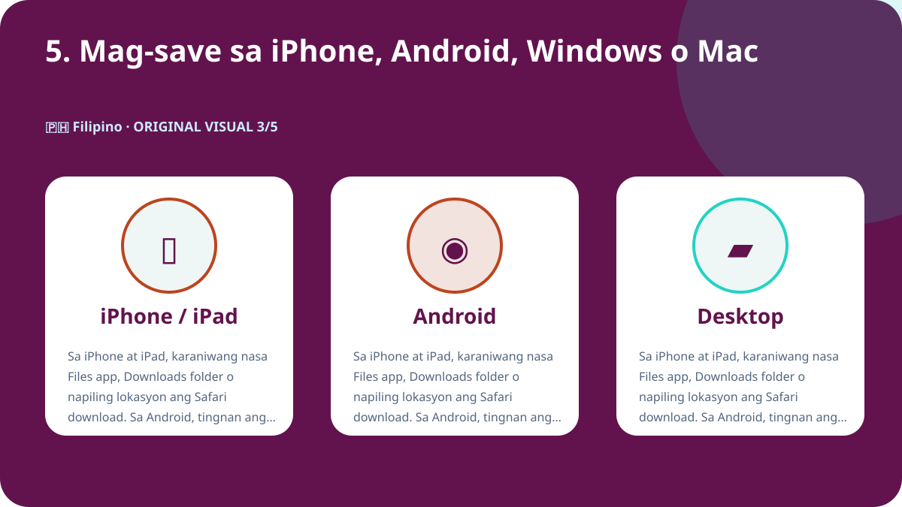
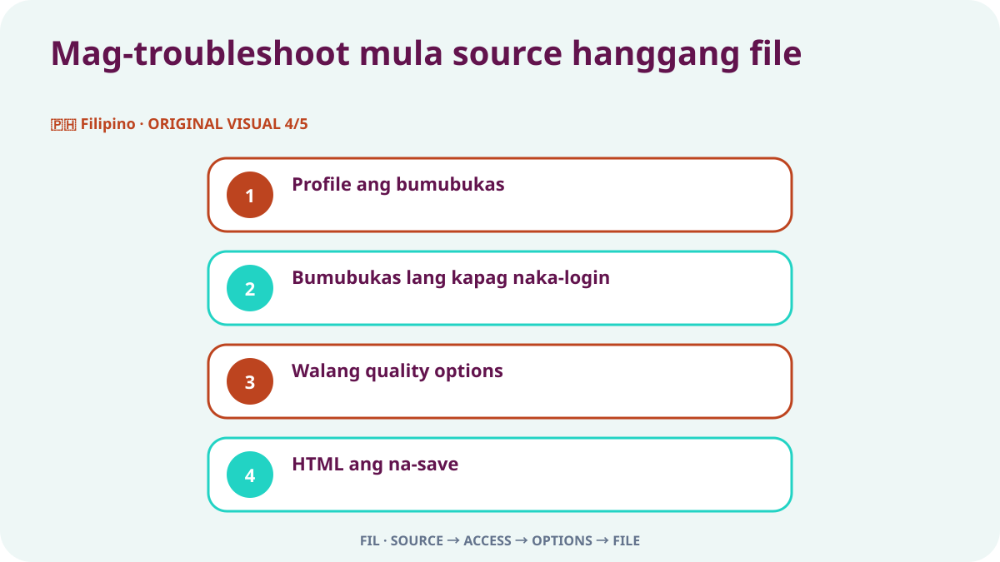

Mabilis na sagot
Buksan ang mismong X post na may video, tiyaking pampubliko ito, at gamitin ang Share menu upang kopyahin ang link ng post. I-paste ang URL sa Downloader-X, pumili ng MP4 na talagang nakalista sa resulta, at i-play ang simula, gitna at dulo pagkatapos ma-save. Gamitin lamang ito sa sariling video, media na may angkop na lisensya, o content na malinaw na pinahintulutan ng may-ari. Hindi dapat hingin ng public-link workflow ang X password, verification code, browser cookie o remote access.
1. Suriin ang public access at karapatang gamitin
Magsimula sa orihinal na post, hindi sa profile, search result, screenshot o forwarded preview. Buksan ang URL sa bagong tab at itugma ang account, text, thumbnail at haba. Ang pagiging public ay tumutukoy sa kasalukuyang access at hindi awtomatikong nagbibigay ng pahintulot para mag-repost, mag-edit, magbenta o gumamit sa ads. Kung protected ang account, nabura ang post, kailangan ng espesyal na login o may restriction, huminto at humingi ng awtorisadong kopya sa may-ari sa halip na lampasan ang kontrol.
Copyright, pahintulot at credit
Access setting ang public visibility, hindi lisensya. I-save lamang ang sariling video, media na may compatible license, o content na may malinaw na pahintulot. Para sa repost, edit o commercial use, tiyaking sakop iyon ng permiso at panatilihin ang written proof. Igalang ang mga taong nasa video, pribadong impormasyon, sensitibong lugar at mga menor de edad, at huwag ipresenta ang gawa ng iba bilang sarili.
2. Kopyahin ang eksaktong post URL
Ang input link ay dapat tumukoy sa isang post na may video. Sa X, buksan ang Share menu at piliing kopyahin ang link ng post, pagkatapos ay subukan ito sa bagong tab. Ang profile o timeline URL ay may maraming post kaya hindi nito tinutukoy ang tamang media. Nakakatulong ang maliit na check na ito para maihiwalay ang maling link sa service error at maiwasan ang paulit-ulit na pag-click na gumagawa ng partial o duplicate na file.
- Buksan ang orihinal na video post at pumunta sa individual post page.
- Gamitin ang Share at kopyahin ang link sa halip na mano-manong mag-type.
- Tiyaking x.com o twitter.com ang domain at post URL ito.
- Buksan sa bagong tab at itugma ang account, text, thumbnail at video.
- Itabi ang source URL at patunay ng pahintulot kasama ng file.
3. I-paste ang link at piliin ang totoong resulta
I-paste ang na-check na URL sa X Downloader at simulan ang pagproseso nang isang beses. Hintayin ang aktuwal na options at ikumpara ang title o preview sa source post. Pumili lamang ng format at resolution na nakikita sa resulta. Huwag maniwala sa 4K, 1080p o no-watermark claim kapag wala naman ang variant sa source. Kapag nabigo, dapat malinaw ang error; hindi dapat ipasa ang HTML page, installer o maling file bilang matagumpay na video.
Orihinal na Filipino demo video
Ginawa ang video para sa pahinang ito at may sariling larawan, kulay at teksto na hindi inuulit sa ibang wika.
4. Piliin ang HD ayon sa source at gamit
Mapagkakatiwalaan lamang ang HD label kapag mula ito sa aktuwal na media variant ng public post. Para sa phone at laptop, madalas balanse ang 720p sa linaw, data at storage. Kapaki-pakinabang ang 1080p sa malaking screen kung talagang inaalok ito ng source. Maaaring magkaiba ang bitrate, codec at compression ng dalawang file na parehong resolution, kaya i-play ang file at huwag umasa sa filename. Kung kailangan ang tunog, pumili ng option na may video at audio at i-check agad ang track pagkatapos mag-save.

5. Mag-save sa iPhone, Android, Windows o Mac
Sa iPhone at iPad, karaniwang nasa Files app, Downloads folder o napiling lokasyon ang Safari download. Sa Android, tingnan ang browser downloads o Files app. Sa Windows, macOS, Linux at ChromeOS, suriin muna ang Downloads folder at browser history bago ulitin. Kapag kulang ang space, burahin ang hindi kailangan o pumili ng mas maliit na resolution. Huwag mag-install ng hindi kilalang download manager dahil lamang sinabing mandatory ito ng isang page.

6. Beripikahin ang na-save na file
Tapos lamang ang proseso kapag nabubuksan ang file bilang tunay na video, hindi kapag nawala lang ang progress bar. Suriin bago i-archive o ibahagi:
- Tama ang file type, gaya ng MP4, at hindi HTML o installer.
- Hindi zero ang laki at makatwiran para sa haba at kalidad.
- I-play ang simula, gitna at dulo para sa larawan, haba at audio.
- Naitala ang filename, folder, source URL at pahintulot.
Itala ang source bago pangmatagalang itago
Para sa maraming clip, itala ang account, post date, permanent URL, maikling paglalarawan, piniling variant, file size at basehan ng pahintulot. Pinipigilan nito ang file na mawalan ng pinagmulan at pinapadali ang pag-review ng credit at lisensya. Sa quote post, reply o thread, kopyahin ang URL ng post na talagang may video, hindi ang post na nagbanggit o nag-quote lamang dito.
Mag-troubleshoot mula source hanggang file

Profile ang bumubukas
Bumalik sa video post at kopyahin sa Share; hindi tumutukoy ang profile sa isang media.
Bumubukas lang kapag naka-login
Maaaring protected o restricted. Huwag ibigay ang credentials o cookies; humingi ng awtorisadong kopya.
Walang quality options
Tiyaking umiiral pa ang post, may native video at gumagana ang URL, pagkatapos ay mag-refresh nang isang beses.
HTML ang na-save
Burahin ito, huwag palitan ang extension, at ulitin ang URL at real video option checks.
Walang audio
I-check ang source, device volume at ibang trusted player; piliin ang combined option kung kailangan.
Seguridad at privacy
Hindi kailangan sa public-link workflow ang X password, two-factor code, exported cookie, remote control, executable installer o pag-disable ng device protection. Huminto kapag may .exe, .dmg o unrelated browser extension. Suriin ang domain, file type at source bago buksan. Sa shared device, ilipat ang awtorisadong file mula public folder at burahin ang hindi kailangang temporary copy.
Ayusin ang file at iwasan ang duplicate
Gumamit ng filename na may maikling paksa, account, petsa at quality, halimbawa topic_creator_2026-08-30_720p.mp4. Paghiwalayin ang temporary at verified folders at panatilihin lamang ang kailangan. Hindi gumaganda ang quality sa paulit-ulit na click; kadalasan ay duplicate o partial file lamang ang nadaragdag. Itabi ang URL, credit at usage terms sa note o spreadsheet ng proyekto.
Huling 60-segundong checklist
- Tamang video post ang binubuksan ng URL.
- Public ito nang walang access bypass.
- May pagmamay-ari o pahintulot kang mag-save.
- Hindi humihingi ang service ng credentials o cookie.
- Nasa totoong resulta ang piniling kalidad.
- May sapat na storage ang device.
- Makatwiran ang file type at size.
- Buong gumagana ang video at audio.
- Naitala ang source URL at credit.
- Hindi lalampas sa pahintulot ang susunod na gamit.
Mga madalas itanong
Pwede ba ang x.com at twitter.com links?
Oo, kung pareho silang nagbubukas ng parehong public post at na-check ang destination.
Bakit walang 1080p sa lahat ng post?
Nakadepende ang resolution sa source file at sa aktuwal na available variants.
Pwede ba sa protected account?
Hindi. Public posts lamang ang sakop at walang bypass sa restriction.
Nasaan ang file sa iPhone?
Karaniwan sa Files app, Downloads o lokasyong itinakda sa Safari.
Ano ang gagawin kung HTML ang file?
Burahin ito, huwag i-rename, at muling suriin ang URL at video option.
Pwede bang i-repost agad ang public post?
Hindi. Kailangan ng lisensya o pahintulot para sa redistribution at planong gamit.
Ibang wika at kaugnay na gabay
Magsimula sa na-verify na public post URL
I-paste ang tamang link, piliin lamang ang tunay na quality at i-check ang file bago gamitin.
Gamitin ang Downloader-X para sa X